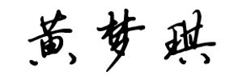
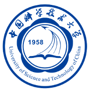
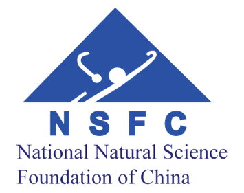
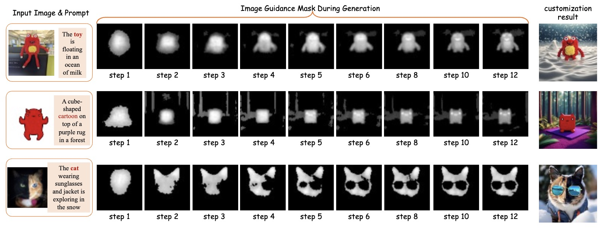
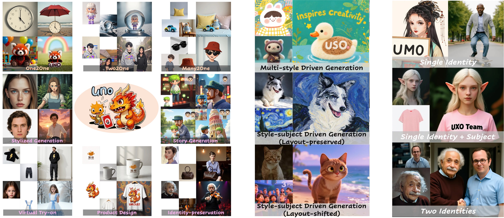

My research interests include deep generative models, image/video/3D generation, and unified multimodal models. I am the recipient of the Best Student Paper Award at ACM Multimedia 2022 as the first author. In 2025, I was awarded the First Prize of the Natural Science Award from the China Society of Image and Graphics (CSIG) and the Special Prize of the President Scholarship of the Chinese Academy of Sciences (CAS). I have also received funding from the First National Natural Science Foundation of China for Youth Student Fundamental Research (Ph.D. student). I was selected for top industry talent programs including the Alibaba, ByteDance, etc.
研究方向为图像、视频、3D内容生成和多模态统一模型。 博士期间以第一作者获CCF-A类国际会议ACM Multimedia 2022最佳学生论文奖。获2025年中国图像图形学会自然科学一等奖; 获批首届国家自然科学基金青年学生基础研究项目(博士研究生)，入选首届中国科协青年人才托举工程博士生专项(中国电子学会托举)。获2025年中国科学院院长特别奖。曾入选阿里星(2025 AliStar Program - P7)、字节跳动头部人才计划(3-1)等。
Education

University of Science and Technology of China (USTC)
Ph.D. , September 2020 ~
Supervisor: Prof. Zhendong Mao
University of Science and Technology of China (USTC)
B.Eng. , September 2016 ~ June 2020
Funding

Selected Publications Google Scholar Profile
Awards
Industrial Research Experience



Grand Challenges
Last update: May 2026.
News
-
May 2026UFO is accepted by ICML 2026!
-
February 2026USO and UMO are accepted by CVPR 2026!
-
January 20261 paper is accepted by T-PAMI!! Good kickoff for the 2026. 🚀🚀🚀
-
November 20251 paper is accepted by AAAI 2026
-
October 20251 paper is accepted by T-PAMI!!
-
September 20251 paper is accepted by NeurIPS 2025!
-
June 20254 papers are accepted by ICCV 2025!
-
February 20254 papers are accepted by CVPR 2025!
-
December 20241 papers is accepted by AAAI 2025!
-
February 20241 papers is accepted by CVPR 2024!
-
December 20232 papers are accepted by AAAI 2024!
-
March 2023Our paper "Towards Accurate Image Coding: Improved Autoregressive Image Generation with Dynamic Vector Quantization" is selected as a highlight at CVPR 2023!
-
February 20232 papers are accepted by CVPR 2023!
-
October 2022Our paper "DSE-GAN: Dynamic Semantic Evolution Generative Adversarial Network for Text-to-Image Generation" receives the Best Student Paper Award at ACM Multimedia 2022!
-
June 20221 paper is accepted by ACM Multimedia 2022!